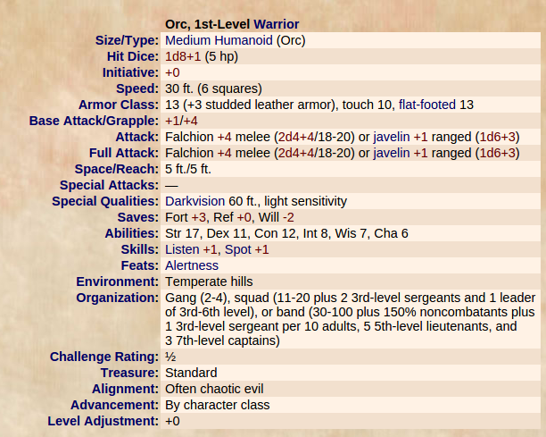
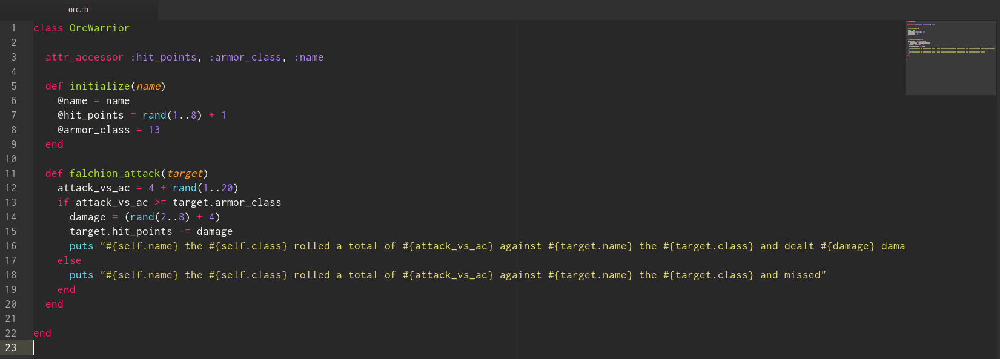
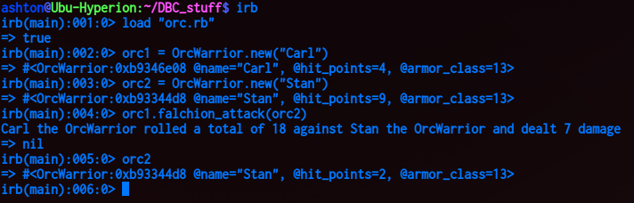

To explain classes and methods, we're going to create a class based on a relatable fantasy monster known as an Orc sspecifically from Dungeons and Dragons 3.5 SRD also known as the open source systems reference document. We're going to use this because you can check out all the specific system information for free within it, and it gives us a great way to explain classes and methods. Here's an image of what section we're going to base our code on: 

This is a very basic class, and specifically only uses a few stats from the Orc Warrior referenced above to keep things simple. We'll start defining our class by using "class" followed by a class name, and will end it using "end", which the very bottom end of the class represents.
To make a very basic functioning rpg monster, our monster needs a few stats, the first being hit points, to measure how close they are to death. The 2nd thing they need, armor class, to determine how hard this particular monster is to hit. They orcs should probably have a name as well, to make them easy to identify. But how do we make every new orc we create from our class an individual who can contribute in their own way to our rpg story? Enter instance variables.
Instance variables start with an @ sign, and allow us to give every 'instance' of an orc different stats. Obviously we wouldn't want every orc named carl, that would be confusing, so having an instance variable allows every orc we make to have their very own unique name.
We then move forward by giving each orc their own hit point value. Based on the hit points from our orc warrior, they have an eight sided dice (d8) worth of hp (hit points) + 1. An eight sided dice is really just a random value of 1 through 8, which can be accomplished by the rand(1..8) method followed by a + 1. This gives each orc created a random amount of health which we will bind to the instance variable @hit_points.
While true DND 3.5 has 3 types of armor class, we've simplified to one type for this example. We represent armor class as an instance variable equal to 13, the full value of the orc warrior above. This doesn't change from orc to orc, so it can be set static (but we could modify later if we wanted to)
Now, we want to give our orc the ability to attack other orcs, but how do we represent the abillity for our orc to use his falchion? By creating an attack method.
To give our orcs the ability to attack with falchions, we'll want to give them a falchion attack. So, we've created a method called falchion_attack using def falchion_attack(attack).
What does target portion of the method mean? The target is an argument for our method, as we need to be specific in which target our orc is to attack. This target will apply when the method is called, and allow our method to carry on with its calculations.
What are we trying to accomplish with our attack? Well, an attack in DND is started by rolling a 20 sided dice, adding in any bonuses, then comparing that value on whether is "meets or beats" the target's AC (or armor class). How do we represent this in our method? We'll create a local variable called attack_vs_ac which is equal to the bonus (of +4 per our orc's falchion attack) and a random amount of 1 through 20, which represents our 20 sided dice roll.
Now that we have the value of the attack roll defined as attack_vs_ac, we'll need to compare it against the target's ac. Since we're assuming our system will use similar variables across all monsters/players etc we'll name the targets AC as armor_class, just like our orc. How to we access this value? Through target.armor_class. We'll compare whether or not attack_vs_ac is greater than or equal to (meets or beats) armor_class through an if statement 'if attack_vs_ac >= target.armor_class' which will then compare our rolled attack against the defenders AC
If the attack value is lower than the AC, the 1st statement will be false, so our code will run the else statement letting the player know that their orcs attack missed their target. #{} is string interpolation which means we're calling a variable into puts from ruby, that is then printed to the screen. We call self.name because we want to let whoevers playing know that their orc character attacked, self.class calls our Orc Warrior variable for further definition of this character, along with their attack against who and how it missed.
If the attack meets the target's AC, we now need to account for a new variable, damage. The damage of a falchion is two d4 + 4 for this orc, so rand(2..8) accomplishes two four sided dice along with a + 4 bonus, which is then stored in the damage variable. The target.hit_points, represents the instance variable of hit points of our target (if named similar to our orc) and this will go down (-=) equal to the amount of damage we just rolled. Then, for good measure, we display an output to the screen to showcase what just transpired.

I loaded up our orc code into IRB (interactive ruby) and made two orcs, orc1, and orc2 and named them Carl and Stan respectively. Our name is set by the instance variable @name, which pulls from the class initialize that takes a name argument. The initialize method is a special method known as a constructor, that can take arguments an assign those to instance variables. When we call orc1 = OrcWarrior.new("Carl") we're telling our program to make a new orc warrior, providing the string "Carl" which is then assigned to @name via the initialize constructor method. This then creates an orc instance assigned to the variable orc1, that has 4 hit points and 13 armor class. We create a 2nd Orc named Stan for good measure, and you can see the random hit points are working as Stan has more health than Carl (most likely because he came from a long line of battle hardened orcs, or the luck of random was in his favor).
Last but not least, we call our method falchion attack to start a battle, the target being Stan, since Carl is upset Stan has more hit points than he does and wants to even the odds. We do this by calling orc1.falchion_attack(orc2), this specifies orc2 as the target of orc1s falchion attack, as we can see by the output, Carl hits Stan with an 18 (greater than Stan's 13 armor class) and deals 7 damage, when we call orc2 in the final portion of our IRB, we can see Stan's HP has been reduced to a measely 2 after he took Carl's falchion attack.
This concludes my example of classes. To recap, we made an orc class, that allows us to create unique instances of orcs, these orcs have their own attributes such as names and hit points, and these intances can carry out their own attacks.
What's missing? Well, we could be more true to object oriented programming by making characters that have values of HP, we could expand out the attack method to include various attacks of any shape or size, we could make many elements more dynamic, rather than limiting this class to be specific to just orcs. How would you improve upon this code?